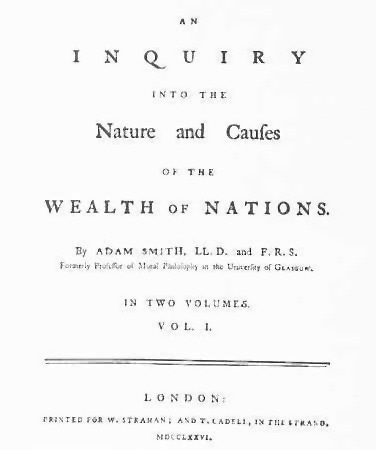
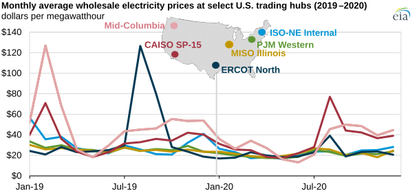
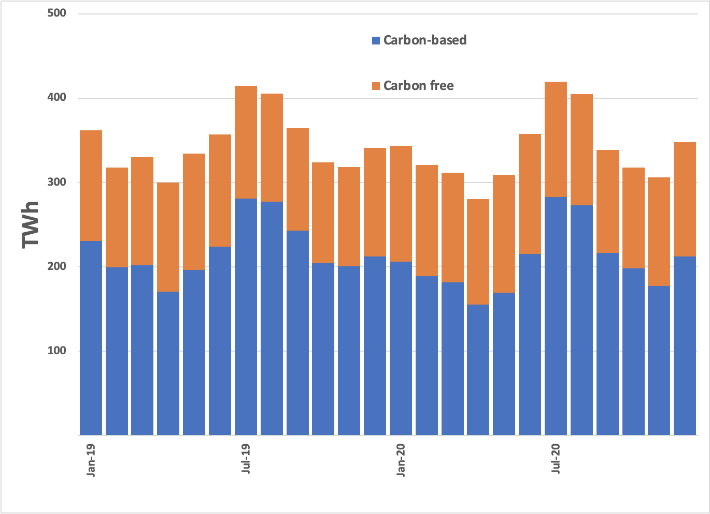
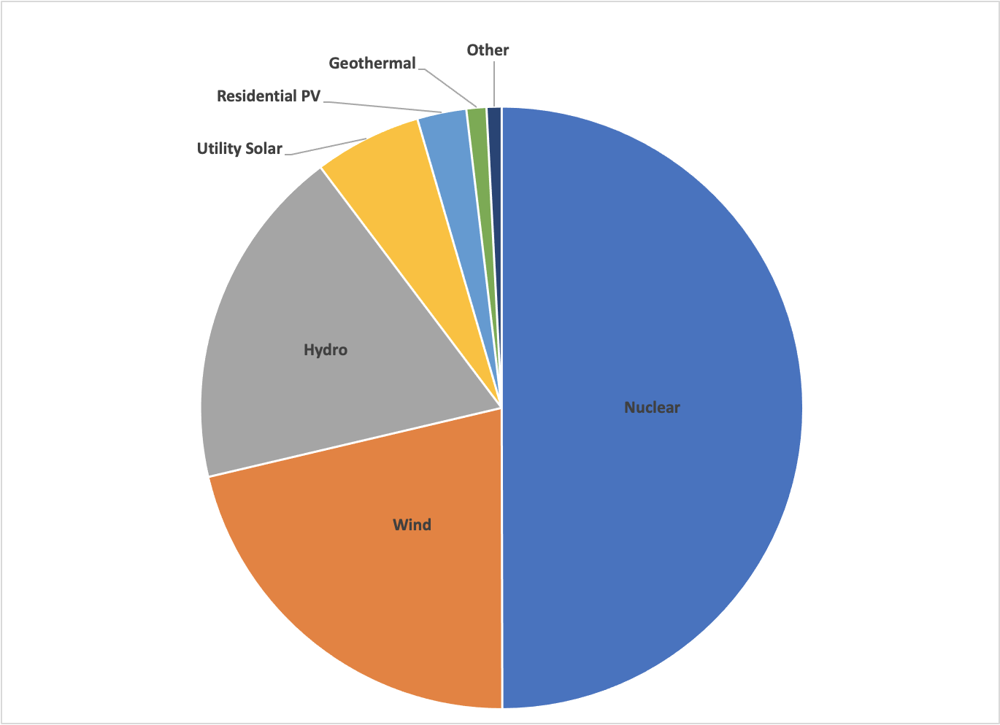

I’m Jonathan Burbaum, and this is Healing Earth with Technology: a weekly, Science-based, subscriber-supported serial. In this serial, I offer a peek behind the headlines of science, focusing (at least in the beginning) on climate change/global warming/decarbonization. I welcome comments, contributions, and discussions, particularly those that follow Deming’s caveat , “In God we trust. All others, bring data.” The subliminal objective is to open the scientific process to a broader audience so that readers can discover their own truth, not based on innuendo or ad hominem attributions but instead based on hard data and critical thought.
You can read Healing for free, and you can reach me directly by replying to this email. If someone forwarded you this email, they’re asking you to sign up. You can do that by clicking here .
If you really want to help spread the word, then pay for the otherwise free subscription. I use any fees to increase readership through Facebook and LinkedIn ads.
Today’s read: 8 minutes.

“There are two very easy and effectual remedies [to sectarian divisions in society], however, by whose joint operation the state might, without violence, correct whatever was unsocial or disagreeably rigorous in the morals of all the little sects into which the country was divided.
The first of those remedies is the study of science and philosophy, which the state might render almost universal among all people of middling or more than middling rank and fortune; not by giving salaries to teachers in order to make them negligent and idle, but by instituting some sort of probation, even in the higher and more difficult sciences, to be undergone by every person before he was permitted to exercise any liberal profession, or before he could be received as a candidate for any honorable office, of trust or profit. If the state imposed upon this order of men the necessity of learning, it would have no occasion to give itself any trouble about providing them with proper teachers. They would soon find better teachers for themselves, than any whom the state could provide for them. Science is the great antidote to the poison of enthusiasm and superstition; and where all the superior ranks of people were secured from it, the inferior ranks could not be much exposed to it.
The second of those remedies is the frequency and gaiety of public diversions. The state, by encouraging, that is, by giving entire liberty to all those who, from their own interest, would attempt, without scandal or indecency, to amuse and divert the people by painting, poetry, music, dancing; by all sorts of dramatic representations and exhibitions; would easily dissipate, in the greater part of them, that melancholy and gloomy humor which is almost always the nurse of popular superstition and enthusiasm. The gaiety and good humor which those diversions inspire were altogether inconsistent with that temper of mind which was fittest for their purpose, or which they could best work upon. Dramatic representations, besides, frequently exposing their artifices to public ridicule, and sometimes even to public execration, were, upon that account, more than all other diversions, the objects of their peculiar abhorrence.”
Adam Smith, “Wealth of Nations” Book V, Part III, Article III, Of the Expense of the Institutions for the Instruction of People of all Ages
In this passage, Smith provides a two-fold prescription to social divisions (which he describes as religious sects). In context, Wealth of Nations reflects the emergence of capitalism in Great Britain under King George III before either Democracy (as a form of government) or Science (as a proper discipline in Universities) became common. Today, he would recognize these religious sects as our political tribes, so, like much of this work, it has relevance today.
Smith’s writing style is not the most transparent, and it’s written in the language of his time, so it needs some color commentary. For example, he refers to “superstition and enthusiasm 1 ” in a way that evokes today’s “unsocial and disagreeably rigorous” polarization.
He recommends two “very easy” actions to counteract the human tendency toward this blind tribalism: (1) Require the middle class to earn essential fluency in science, giving them the skill of thinking for themselves, and (2) Encourage public entertainment that is accessible to all. Unfortunately, in today’s social media-plagued world, both actions are being suffocated. For the first point, it’s much too easy to “follow”, so many citizens let others think for them ( viz. Twitter). For the second point, there are now so many political tribes that every tribe, no matter how small, can have its own private audience ( viz. YouTube).
The story continues…
Let’s reiterate what the problem is and how possible solutions are constrained. Stated concisely:
-
The increase in carbon dioxide levels in the atmosphere, attributable to human extraction and combustion of geologic carbon over 350 years of industrialization, threatens to destabilize Earth’s climates.
Let’s now summarize the solution space.
-
To solve this problem, we must reduce the quantity of already-emitted carbon dioxide, not simply reduce the rate of its increase by “decarbonization”.
-
To remove carbon dioxide from our air is prohibitively expensive using any engineering approach simply because of energy costs.
-
Photosynthesis is the only process that can create economic value out of thin air using (free) sunlight for energy.
-
Increasing Earth’s capacity for photosynthesis is a serious geoengineering challenge. Producing more irrigation water from ocean water, however, can avoid the limitations of scale—we have enough land and water to enable the approach.
-
The scale is nevertheless gargantuan: To capture all the carbon we emit in a year will require a significant increase in irrigated land under cultivation.
Earlier, we set the bar for desalination at $200-$400 per “acre-foot” as a financial target, 2 with anything over $1000 as a ceiling. Of course, lower costs are a better incentive for capital, but those are the limits that current markets suggest.
Removing salt from water has unavoidable energy costs, too, so, in this issue, let’s see if even that goal is too costly. Modern desalination plants typically use electric power. The minimum energy of separation is about one megawatt-hour per acre-foot, so if the energy costs are too high, we’re out of luck. What do we see?

Energy costs are not an automatic show-stopper! It looks like energy costs of $20-$40 per acre-foot of water are unavoidable, but we’re not priced out of the process. There’s economic headroom to produce desalinated water from a less-than-ideal system.
There are many systematic advantages. Electricity is hard to store and cannot be transported over long distances, so spikes in price are generally due to regional demand. With a purpose-built desalination system, demand will be constant, and energy costs will be stable. In addition, it’s much easier to store fresh water in a reservoir than to store electrons in a giant battery (or hydrogen in a pressurized tank) so that operators can run any system constantly. Further, since irrigation doesn’t require potable water, the aperture of technology approaches for desalination is broad—all we have to do is remove enough salt and add the water to land. Nature will suck carbon out of the air for us. And now it looks as if there’s a decent chance that we can do it at breakeven economics so that we don’t need a “price on carbon” at all.
There is one daunting problem left, however. Recall that, in today’s world, in a practical sense, carbon is energy. So an additional constraint on the solution is that whatever energy we add must come from sources that do not release carbon dioxide. And we’re already at the limit of passive solar evaporation of water followed by condensation over land—that’d be “rainfall” in common vernacular. So let’s look at the same timeframe at the cost graph above:

Roughly 2/3 of our power comes from carbon-based sources (sources whose stored energy is released when carbon dioxide is formed), so we’ll need to focus on the other third:

Let’s run a few numbers (yeah, sorry, more math). Imagine if we doubled the carbon-free power in the U.S. and focused all of it on desalination. Further, suppose that we had a desalination technology that was 100% efficient, so for every 1 MWh of energy, one acre-foot of irrigation water is produced. Finally, let’s assume that we can irrigate efficiently such that crops can be grown on one acre-foot of water per growing season. None of these assumptions is achievable, but it will give a sense of scale: “How much land are we talking about, compared to how much we might need?”
Well, under these idealized conditions, an additional 1.6 billion MWh will put a foot of fresh water on 1.6 billion acres, or about 2.5 million square miles. Earth’s surface area is about 200 million square miles, so that would add about 1% to the green part of the planet. That’s a decent chunk, but we’d still need several times that amount to capture the carbon dioxide we emit every year. We’ve made several unrealistic assumptions about efficiency, and we’re not accounting for the energy of moving the water from the ocean to land. So, there’s work to be done before we can start. But this approach doesn’t rely on gimmicks like carbon credits and “net-zero” that make us feel better but don’t solve the problem. Of course, detailed models will get us closer to a solid number, but we’re in the ballpark.
Now, you should be able to visualize the size of the problem. I’ve reiterated: Our decarbonization efforts so far (and even those on the eco-lunatic fringe) are no better than a rain dance. Plus, there’s this observation: Half of our carbon-free electricity comes from nuclear power. Are we comfortable with doubling that ?
Smith’s use of “enthusiasm” is now archaic. His definition is a “religious fervor supposedly resulting directly from divine inspiration, typically involving speaking in tongues and wild, uncoordinated movements of the body.”
The market for irrigation water is perverse—in some areas (like Iowa), farmers don’t pay anything (rainfall is free). In contrast, water is essential in other places (like California’s Imperial Valley), but supply is regulated both by government allocations and climate. In those areas, where there is no water, there is no agriculture.